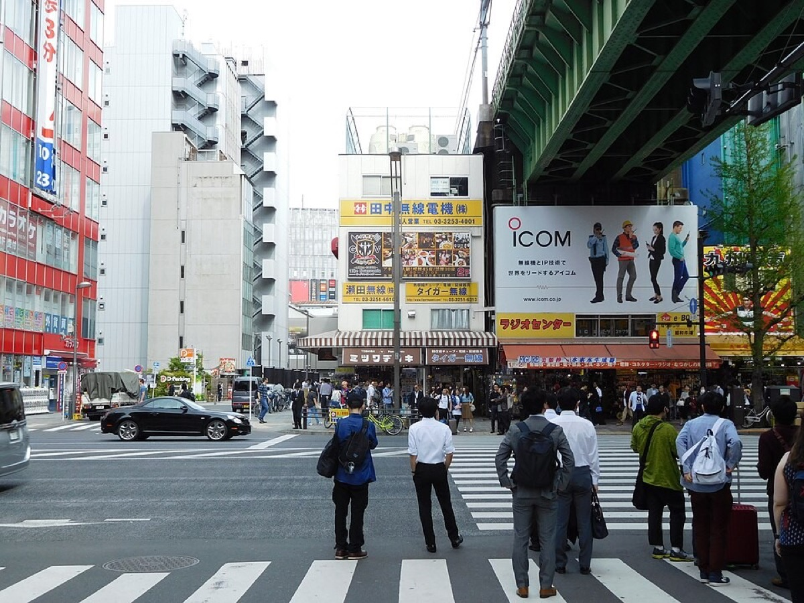

The morning, hour by hour Draft
- 10:30
- 11:30
- 12:30
- 13:30
- Akihabara Radio Kaikan
- Super Potato
- Mandarake Complex
- Akihabara Gachapon Kaikan
- Lunch at a maid café, until 13:30
- Kanda Myojin Shrine
Draft schedule
10:30 to 14:00, all on foot
The order may change on the day, depending on what the kids enjoy.
- 10:30Meet at Electric Town ExitWe meet at the Electric Town Exit of JR Akihabara Station (proposed, to be confirmed).Google Maps ↗ · More about this stop ↓

- 10:40Akihabara Radio KaikanFigures, trading cards and models in one building.Google Maps ↗ · More about this stop ↓

- 11:15Super PotatoA retro game shop. Games the parents may have grown up with.Google Maps ↗ · More about this stop ↓

- 11:45

- 12:10

- 12:30Lunch at a maid café, until 13:30Yuuki joins. Most cafés seat by the hour.Maid cafés near the route ↗LUNCH
- 13:35Kanda Myojin ShrineA shrine that appears in anime. Tradition meets pop culture.Google Maps ↗ · More about this stop ↓

- 14:00GoodbyeThe order may change on the day, depending on what the kids enjoy.Back to Akihabara Station ↗END
The stops are close together; Kanda Myojin is the longest walk. The map skips the maid café. Open the route in Google Maps ↗
The stops
Electric Town Exit
The side of the station that faces the shops. The other exit, Showa-dori, is on the quiet side, so please check the signs.
- Radio Kaikan's yellow sign straight ahead
Akihabara Radio Kaikan
The best-known hobby building in Akihabara, with ten floors of figures, dolls, trading cards and model kits from many different shops.
- Figure and doll shops on 7F and 8F
- Card shops on 9F
Super Potato
A retro game shop on three floors, with games and consoles from the Famicom years onward. The top floor is a small arcade with old machines.
- Famicom and Super Famicom cartridges
- The retro arcade upstairs
Mandarake Complex
Eight floors of used manga, toys, figures and rare collector items, in a black building near the main street.
- Vintage manga and toys
- Figures and model kits
Akihabara Gachapon Kaikan
A shop filled with capsule toy machines. Put in coins, turn the handle, and get a random small toy. It makes a good souvenir, because nobody knows what will come out.
- New machines added every week
- Anime characters, tiny food and odd ideas
Kanda Myojin Shrine
A shrine with roots going back to the year 730, and the guardian shrine of old Edo. It also protects Akihabara, so people bring their new phones and laptops here for luck.
- Ema prayer plaques with anime drawings
- The bright red and gold main hall
- The shrine seen in Love Live!
Open in Google Maps ↗
Photo: Hyppolyte de Saint-Rambert, CC BY-SA 4.0
Electric Town Exit, 10:30
Proposed, to be confirmedWe meet at the Electric Town Exit of JR Akihabara Station. Come out of the exit and Radio Kaikan, with its yellow sign, is straight ahead.
JR Akihabara Station, Electric Town Exit ↗
Please check the signs: the other exit, Showa-dori, is on the quiet side of the station.